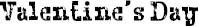

I GIVE OLIVIA a heart necklace for valentine’s day, and she gives me a messenger bag she’s made out of old floppy disks. very cool how she makes things like that. earrings out of pieces of circuit boards. dresses out of t-shirts. bags out of old jeans. she’s so creative. i tell her she should be an artist someday, but she wants to be a scientist. a geneticist, of all things. she wants to find cures for people like her brother, i guess.
we make plans for me to finally meet her parents. a mexican restaurant on amesfort avenue near her house on saturday night.
all day long i’m nervous about it. and when i get nervous my tics come out. i mean, my tics are always there, but they’re not like they used to be when i was little: nothing but a few hard blinks now, the occasional head pull. but when i’m stressed they get worse—and i’m definitely stressing about meeting her folks.
they’re waiting inside when i get to the restaurant. the dad gets up and shakes my hand, and the mom gives me a hug. i give auggie a hello fist-punch and kiss olivia on the cheek before i sit down.
it’s so nice to meet you, justin! we’ve heard so much about you!
her parents couldn’t be nicer. put me at ease right away. the waiter brings over the menus and i notice his expression the moment he lays eyes on august. but i pretend not to notice. i guess we’re all pretending not to notice things tonight. the waiter. my tics. the way august crushes the tortilla chips on the table and spoons the crumbs into his mouth. i look at olivia and she smiles at me. she knows. she sees the waiter’s face. she sees my tics. olivia is a girl who sees everything.
we spend the entire dinner talking and laughing. olivia’s parents ask me about my music, how i got into the fiddle and stuff like that. and i tell them about how i used to play classical violin but I got into appalachian folk music and then zydeco. and they’re listening to every word like they’re really interested. they tell me to let them know the next time my band’s playing a gig so they can come listen.
i’m not used to all the attention, to be truthful. my parents don’t have a clue about what I want to do with my life. they never ask. we never talk like this. i don’t think they even know i traded my baroque violin for an eight-string hardanger fiddle two years ago.
after dinner we go back to olivia’s for some ice cream. their dog greets us at the door. an old dog. super sweet. she’d thrown up all over the hallway, though. olivia’s mom rushes to get paper towels while the dad picks the dog up like she’s a baby.
what’s up, ol’ girlie? he says, and the dog’s in heaven, tongue hanging out, tail wagging, legs in the air at awkward angles.
dad, tell justin how you got daisy, says olivia.
yeah! says auggie.
the dad smiles and sits down in a chair with the dog still cradled in his arms. it’s obvious he’s told this story lots of times and they all love to hear it.
so i’m coming home from the subway one day, he says, and a homeless guy i’ve never seen in this neighborhood before is pushing this floppy mutt in a stroller, and he comes up to me and says, hey, mister, wanna buy my dog? and without even thinking about it, i say sure, how much you want? and he says ten bucks, so i give him the twenty dollars i have in my wallet and he hands me the dog. justin, i’m telling you, you’ve never smelled anything so bad in your life! she stank so much i can’t even tell you! so i took her right from there to the vet down the street and then i brought her home.
didn’t even call me first, by the way! the mom interjects as she cleans the floor, to see if i’m okay with his bringing home some homeless guy’s dog.
the dog actually looks over at the mom when she says this, like she understands everything everyone is saying about her. she’s a happy dog, like she knows she lucked out that day finding this family.
i kind of know how she feels. i like olivia’s family. they laugh a lot.
my family’s not like this at all. my mom and dad got divorced when i was four and they pretty much hate each other. i grew up spending half of every week in my dad’s apartment in chelsea and the other half in my mom’s place in brooklyn heights. i have a half brother who’s five years older than me and barely knows i exist. for as long as i can remember, i’ve felt like my parents could hardly wait for me to be old enough to take care of myself. “you can go to the store by yourself.” “here’s the key to the apartment.” it’s funny how there’s a word like overprotective to describe some parents, but no word that means the opposite. what word do you use to describe parents who don’t protect enough? underprotective? neglectful? self-involved? lame? all of the above.
olivia’s family tell each other “i love you” all the time.
i can’t remember the last time anyone in my family said that to me.
by the time i go home, my tics have all stopped.